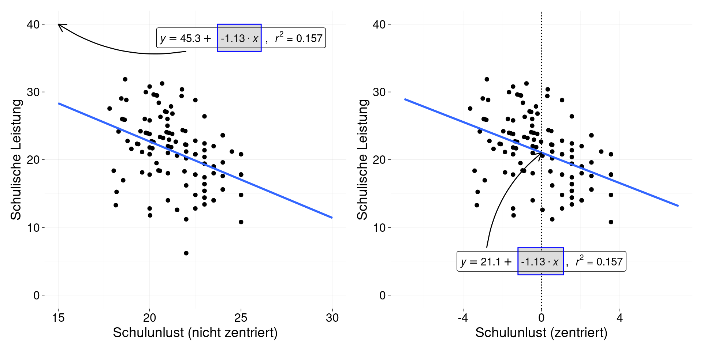

Seminar Fortgeschrittene statistische Methoden II (1)
Termin 4: Parameterschätzung Multi-Level Modelle
SoSe 2023
Parameterschätzung
Bezug zur vorherigen Stunde
In den letzten Sitzungen haben wir uns mit der einfachen linearen Regression befasst. Dabei haben wir uns erst einmal dafür entschieden, eine Regression ohne Berücksichtigung der verschiedenen Subgruppen in den Daten zu berechnen.
Mit einem Prädiktor (\(x_{1}\) ), lautet die Formel der Regression:
\[ \widehat{y}_{m} = b_{0} + b_{1} \cdot x_{m1} \tag{1}\]
Sie liefert uns zwei Parameter $b_{0} und \(b_{1}\).
- \(b_{0} =\) \(y\)-Achsenabschnitt, Konstante, oder Interzept:
- Der Wert von \(y\) bei einer Ausprägung von 0 in \(x\).
- \(b_{1} =\) Regressionsgewicht des Prädiktors oder die Steigung der Regressionsgerade.
- Interpretation: die Steigung der Geraden lässt erkennen, um wie viele Einheiten \(y\) zunimmt, wenn \(x\) um eine Einheit zunimmt.
Um die “Interpretierbarkeit” der Parameter (vorallem die des Interzepts.
Wir haben ebenfalls über “Zentrierung” gesprochen. Wenn wir eine Variable an ihren Mittelwert zentrieren, ziehen wir den Mittelwert der Variable von allen Werten (d.h. alle Beobachtungen) der Variable ab. Zentrierung definiert das Minimum und Maximum der Variable neu. Der Mittelwert einer am Mittelwert zentrierten Variable ist nun gleich Null. Wir können Zentrierung als eine “Daten-Vorverarbeitungsstrategie” betrachten, die die “Interpretierbarkeit” der Parameter (vor allem die des Intercepts) in einem linearen Modell steigert.
Betrachten wir z.B. die folgende Abbildung:
Dargestellt sind die Ergebnisse zweier Regressionen. Beide Regressionen beschreiben den Zusammenhang zwischen Schulunlust und Schulleistung. Die linke Seite der Abbildung zeigt die Ergebnisse der Regression ohne Zentrierung von Schulunlust und die rechte Seite mit Zentrierung. Ein Unterschied ist, dass die Spannweite der zentrierten Daten ein anderer ist. Personen, die einen negativen Wert in der zeitrierten Schulunlust-Variable haben, befinden sich unterhalb des Mittelwert der Gesamtstichprobe. Personen mit positiven Werten befinden sich darüber. Ein weiterer Unterschied fällt auf, wenn wir die Intercepts der Modelle betrachten. Das Interzept auf der rechten Seite liegt inmitten der Verteilung (auf dem Mittelwert, welcher nach Zentrierung gleich Null ist). Zentrierung kann uns also helfen, das Interzept in einem für uns interpretierbaren Bereich “zu holen”.
Berücksichtigung von Subgruppen
Gehen wir nun zu einem Beispiel über, das die Subgruppen in den Daten berücksichtigt. Dafür benötigen wir die folgenden Daten:
# die Daten können mit diesem Befehl geladen werden
urlRemote <- 'https://raw.githubusercontent.com/JoseAlanis/amdstatsem/main'
fpathData <- '/data/schulunlust.txt'
data_schulleistung <- read.table(paste0(urlRemote, fpathData),
header = TRUE, dec = ',')
# wir werden nur die ersten 5 klassen benutzen
# wir können die Daten dieser Klassen mit
# `dplyr`filtern
require(dplyr)
data_schulleistung <- data_schulleistung %>%
filter(klasse_nr <= 5) %>%
# ebenfalls werden wir die variable `unlust`
# zentrieren
mutate(unlust_c = unlust - mean(unlust))Diese Daten sind identisch mit den Daten der obigen Abbildung.
Aufgabe 1
- Erster Schritt:
- Berechnen wir erst einmal eine Gesamt-Regression, ohne die Subgruppen (die einzelnen Klassen) in den Daten zu berücksichtigen.
- Zur Erinnerung: Der R-Befehl, um eine lineare Regression zu berechnen lautet
lm(fomula, data)
- Zweiter Schritt:
- Berechnen wir 5 verschiedene Regressionen, eine für jede Klasse.
- Tipp: Sie können die Daten der einzelnen Klassen mit
dplyr()filtern.- z.B.:
klasse_1 <- data_schulleistung %>% filter(klasse_nr == 1) - Danach können Sie die Regression mit
lm()berechnen.
- z.B.:
- Schreiben Sie \(b_{0}\) und \(b_{1}\) für alle Regressionen auf und vergleichen Sie.
Ergebnisse
Die Ergebnisse sollten mit der folgenden Abbildung kompatibel sein.
Regressionsparameter für das jeweilige "Klassenmodell" | ||
|---|---|---|
Model | beta_0 | beta_1 |
1 | 19.086 | -0.552 |
2 | 19.212 | -0.266 |
3 | 19.310 | -1.397 |
4 | 24.937 | 1.087 |
5 | 24.616 | 0.087 |
Note. 1 = Klasse 1; 2 = Klasse 2; etc. | ||
Aufgabe 2
Vergleichen Sie nun die Ergebnisse der einzelnen Regressionen mit den Ergebnissen eines “Gesamtregressionsmodells” (ein Modell über alle Klassen hinweg).
Hier sind die Ergebnisse:
ges_mod <- lm(data = data_schulleistung,
leistung ~ unlust_c)
ges_df <- data.frame(model = 'gesamt',
beta_0 = summary(ges_mod)$coefficients[1],
beta_1 = summary(ges_mod)$coefficients[2])
nice_table(ges_df,
col.format.custom = 2:3, format.custom = "fun",
title = 'Regressionsparameter für das "Gesamtmodell"',
width = 0.5)Regressionsparameter für das "Gesamtmodell" | ||
|---|---|---|
model | beta_0 | beta_1 |
gesamt | 21.053 | -1.128 |